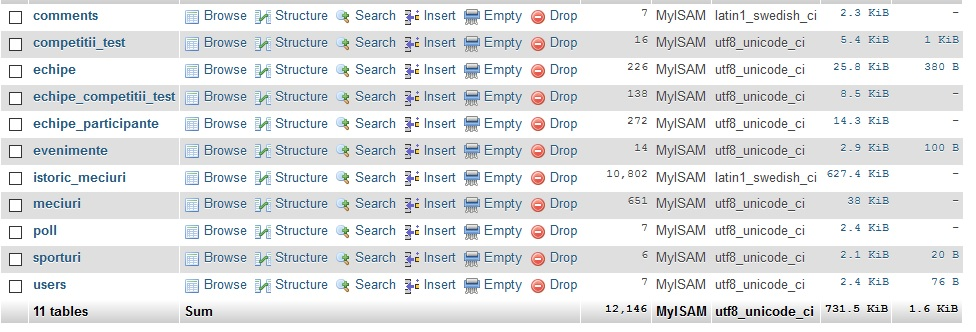

We Ball
Despre
We Ball este o aplicatie care permite crearea si administrarea de competitii dupa modelul Turneelor Finale de fotbal. De asemenea ea ofera posibilitatea de a cauta dupa o multitudine de criterii un meci real din campionatele cele mai puternice ale Europei. Utilizatorii care isi fac cont pot crea competitii intre ei, care sunt vizibile doar participantilor si o pot administra cum doresc. Aplicatia ofera si posibilitate de a adauga comentarii sau de a vota in anumite poll-uri chiar daca utilizatorul nu are un cont. Pentru cei interesati datele despre campionatele publice create sunt disponibile si in format CSV,JSON,PDF si via un flux Atom.
Thenologii folosite
- HTML5 pentru structurarea paginii Web
- CSS pentru layot-ul si stilizarea paginilor.
- PHP pentru functionalitatea aplicatie la nivel de server, dar si pentru comportamentul aplicatiei cu interfata si cu baza de date
- MySQL ca baza de date pentru interogari pe baza de date.
Baza de date
Baza de date este compusa din 11 tabele care sunt folosite pentru a stoca informatii despre competitii si utilizatori.
The database is composed of 11 tables that are used to store competition data and user information.
Tabelul users contine campurile email si parola cae identifica unic un utilizator, dar si un camp special pentru identificarea tipului de utilizator, user sau admin.
Celelalte tabele contin informatii despre competitii, echipele participante, echipele care pot participa intr-o competitie publica, meciurile unei competitii, comentarii sau poll-uri

Detalii de implementare
La crearea unei competitii noi administratorul alege echipele participante din echipele disponibile in baza de date si creaza o competitie cu un anumit numar de echipe specificand numele si numarul de echipe calificate din fiecare grupa. La crearea competitiei, toate echipele participante sunt adaugate intr-o tabela fiind inregistrate ca participante in acea competitie. In acea tabela se pot retine date precum numarul de puncte numarul de victorii si grupa din care face parte. Tot la crearea competitiei se va adauga in tabela meciuri, partidele care urmeaza a fi disputate in fazele eliminatorii, ca apoi pe parcursul competitiei sa se actualizeze echipele participante.Use cases
Cand aplicatia este deschisa utilizatorul va putea vedea prima pagina, unde are posbilitatea de a ajunge in alte pagini si de a cauta un meci din istoricul meciurilor. Fara un cont el poate vedea competitiile publice (Create de administratorii aplicatiei) si poate vota in anumite polluri sau poate comenta la partidele disputate.
Utilizatorul se poate inregistra sau loga pe baza unui email si o parola si isi poate crea propriile competitii. Aici el poate adauga prietenii sai in acea competitie sau poate adauga competitorii fictivi in cazul in care nu sunt suficienti competitori reali. Competitia este vizibila doar pentru participantii ei, acestia ocupandu-se in intregime de administrarea ei.
Pagina de administrare este disponibila doar admin-ului si el poate introduce un nou sport, sterge echipe, adauga echipe etc. De asemenea el creaza competitiile publice (care pot fi vazute si de utilizatorii care nu sunt logati)
Daca cineva este interesat de datele unei competitii aceastea sunt disponibile si in foramt CSV,JSON,PDF si via un Flux Atom.Bibliografie
- Tehnolgii Web
- The Tehnolgii Web, by Dr. Sabin-Corneliu Buraga ;
- PHP Manual
- The PHP manual,
- W3Schools
- W3Schools
- Stack Overflow
- Stack Overflow
- PHP Tutorials
- PHP Tutorials